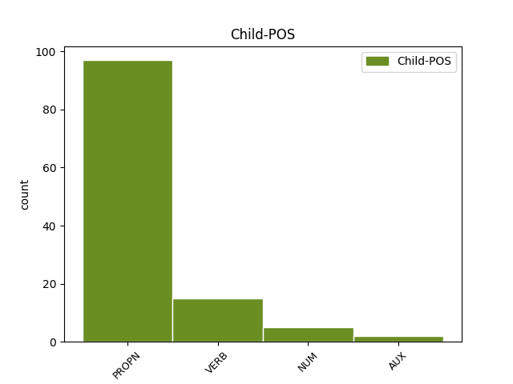

Distribution of features within this leaf


Agreement Rules sorted by frequency.
- When the dependent token is the direct object complements(comp:obj) of the head token, and the dependent token is PROPN.
1 и _ _ _ _ 0 _ _ _
2 пакы _ _ _ _ 0 _ _ _
3 же _ _ _ _ 0 _ _ _
4 призъвавъ призъвати VERB V- Case=Nom|Gender=Masc|Number=Sing|Strength=Strong|Tense=Past|VerbForm=Part|Voice=Act 0 _ _ _
5 стефана стефанъ PROPN Ne Case=Gen|Gender=Masc|Number=Sing 4 comp:obj _ ref=87
6 ѥдиного _ _ _ _ 0 _ _ _
7 ѹчааше _ _ _ _ 0 _ _ _
8 и _ _ _ _ 0 _ _ _
9 ѥже _ _ _ _ 0 _ _ _
10 о _ _ _ _ 0 _ _ _
11 паствѣ _ _ _ _ 0 _ _ _
12 ст҃ааго _ _ _ _ 0 _ _ _
13 того _ _ _ _ 0 _ _ _
14 стада _ _ _ _ 0 _ _ _
1 и _ _ _ _ 0 _ _ _
2 съ _ _ _ _ 0 _ _ _
3 проста _ _ _ _ 0 _ _ _
4 рещи _ _ _ _ 0 _ _ _
5 вьсѧ _ _ _ _ 0 _ _ _
6 приходѧщаꙗ приходити VERB V- Case=Acc|Gender=Masc|Number=Plur|Strength=Weak|Tense=Pres|VerbForm=Part|Voice=Act 7 comp:obj _ ref=76
7 ѹча учити VERB V- Case=Nom|Gender=Masc|Number=Sing|Strength=Strong|Tense=Pres|VerbForm=Part|Voice=Act 0 _ _ _
8 и _ _ _ _ 0 _ _ _
9 ѹтѣшаꙗ _ _ _ _ 0 _ _ _
10 ѿпѹщааше _ _ _ _ 0 _ _ _
11 ѹбогыимъ _ _ _ _ 0 _ _ _
12 же _ _ _ _ 0 _ _ _
13 подаваꙗ _ _ _ _ 0 _ _ _
14 ѥже _ _ _ _ 0 _ _ _
15 на _ _ _ _ 0 _ _ _
16 потрѣбѹ _ _ _ _ 0 _ _ _
17 и _ _ _ _ 0 _ _ _
18 на _ _ _ _ 0 _ _ _
19 пищю _ _ _ _ 0 _ _ _
20 тѣ҃м _ _ _ _ 0 _ _ _
1 таче _ _ _ _ 0 _ _ _
2 по _ _ _ _ 0 _ _ _
3 гл҃ѣхъ _ _ _ _ 0 _ _ _
4 сихъ _ _ _ _ 0 _ _ _
5 ѿпȣсти _ _ _ _ 0 _ _ _
6 ꙗ _ _ _ _ 0 _ _ _
7 вънъ _ _ _ _ 0 _ _ _
8 вьсѧ _ _ _ _ 0 _ _ _
9 ни _ _ _ _ 0 _ _ _
10 ѥдиного единъ NUM Ma Case=Gen|Gender=Masc|Number=Sing 14 comp:obj _ ref=91
11 же _ _ _ _ 0 _ _ _
12 ѹ _ _ _ _ 0 _ _ _
13 себе _ _ _ _ 0 _ _ _
14 оставивъ оставити VERB V- Case=Nom|Gender=Masc|Number=Sing|Strength=Strong|Tense=Past|VerbForm=Part|Voice=Act 0 _ _ _
1 и _ _ _ _ 0 _ _ _
2 не _ _ _ _ 0 _ _ _
3 тѹ _ _ _ _ 0 _ _ _
4 ѥдинде _ _ _ _ 0 _ _ _
5 нъ _ _ _ _ 0 _ _ _
6 и _ _ _ _ 0 _ _ _
7 по _ _ _ _ 0 _ _ _
8 вьсѣмъ _ _ _ _ 0 _ _ _
9 сторонамъ _ _ _ _ 0 _ _ _
10 и _ _ _ _ 0 _ _ _
11 по _ _ _ _ 0 _ _ _
12 вьсѣмъ _ _ _ _ 0 _ _ _
13 зѣмлꙗмъ _ _ _ _ 0 _ _ _
14 преходꙗща _ _ _ _ 0 _ _ _
15 болѣзни _ _ _ _ 0 _ _ _
16 вьсꙗ _ _ _ _ 0 _ _ _
17 и _ _ _ _ 0 _ _ _
18 недѹгы _ _ _ _ 0 _ _ _
19 отъгонита _ _ _ _ 0 _ _ _
20 сѹщиихъ быти AUX V- Case=Gen|Gender=Masc|Number=Plur|Strength=Weak|Tense=Pres|VerbForm=Part|Voice=Act 26 comp:obj _ ref=true
21 въ _ _ _ _ 0 _ _ _
22 тьмьницахъ _ _ _ _ 0 _ _ _
23 и _ _ _ _ 0 _ _ _
24 въ _ _ _ _ 0 _ _ _
25 ѹзахъ _ _ _ _ 0 _ _ _
26 посѣщающа посѣщати VERB V- Case=Nom|Gender=Masc|Number=Dual|Strength=Strong|Tense=Pres|VerbForm=Part|Voice=Act 0 _ _ _
Disagree Examples:
1 и _ _ _ _ 0 _ _ _
2 казань казань PROPN Ne Case=Acc|Gender=Fem|Number=Sing 12 comp:obj _ ref=2
3 есмѧ _ _ _ _ 0 _ _ _
4 и _ _ _ _ 0 _ _ _
5 ѡрдѹ _ _ _ _ 0 _ _ _
6 и _ _ _ _ 0 _ _ _
7 ѹсланъ _ _ _ _ 0 _ _ _
8 и _ _ _ _ 0 _ _ _
9 сараи _ _ _ _ 0 _ _ _
10 и _ _ _ _ 0 _ _ _
11 берекезаны _ _ _ _ 0 _ _ _
12 проехали проѣхати VERB V- Aspect=Res|Case=Nom|Gender=Masc|Number=Plur|Strength=Strong|VerbForm=Part|Voice=Act 0 _ _ _
13 есмѧ _ _ _ _ 0 _ _ _
14 доброволно _ _ _ _ 0 _ _ _
1 а _ _ _ _ 0 _ _ _
2 стал стати VERB V- Aspect=Res|Case=Nom|Gender=Masc|Number=Sing|Strength=Strong|VerbForm=Part|Voice=Act 0 _ _ _
3 ми _ _ _ _ 0 _ _ _
4 сто съто NUM Ma Case=Acc|Gender=Neut|Number=Sing 2 comp:obj _ ref=7
5 рѹблевъ _ _ _ _ 0 _ _ _
1 и _ _ _ _ 0 _ _ _
2 ны _ _ _ _ 0 _ _ _
3 севасть севастѣя PROPN Ne Case=Acc|Gender=Fem,Masc|Number=Sing 4 comp:obj _ ref=26
4 взѧли възяти VERB V- Aspect=Res|Case=Nom|Gender=Masc|Number=Plur|Strength=Strong|VerbForm=Part|Voice=Act 0 _ _ _
1 амасию амасия PROPN Ne Case=Acc|Gender=Fem|Number=Sing 2 comp:obj _ ref=26
2 взѧли възяти VERB V- Aspect=Res|Case=Nom|Gender=Masc|Number=Plur|Strength=Strong|VerbForm=Part|Voice=Act 0 _ _ _
1 се _ _ _ _ 0 _ _ _
2 бо _ _ _ _ 0 _ _ _
3 вси _ _ _ _ 0 _ _ _
4 чл҃вци _ _ _ _ 0 _ _ _
5 прославлѧють _ _ _ _ 0 _ _ _
6 видѧща видѣти VERB V- Case=Nom|Gender=Masc|Number=Plur|Strength=Strong|Tense=Pres|VerbForm=Part|Voice=Act 0 _ _ _
7 лѧжащая лежати VERB V- Case=Nom|Gender=Fem|Number=Sing|Strength=Weak|Tense=Pres|VerbForm=Part|Voice=Act 6 comp:obj _ ref=68.24
8 в _ _ _ _ 0 _ _ _
9 тѣлѣ _ _ _ _ 0 _ _ _
10 на _ _ _ _ 0 _ _ _
11 многа _ _ _ _ 0 _ _ _
12 лѣт _ _ _ _ 0 _ _ _